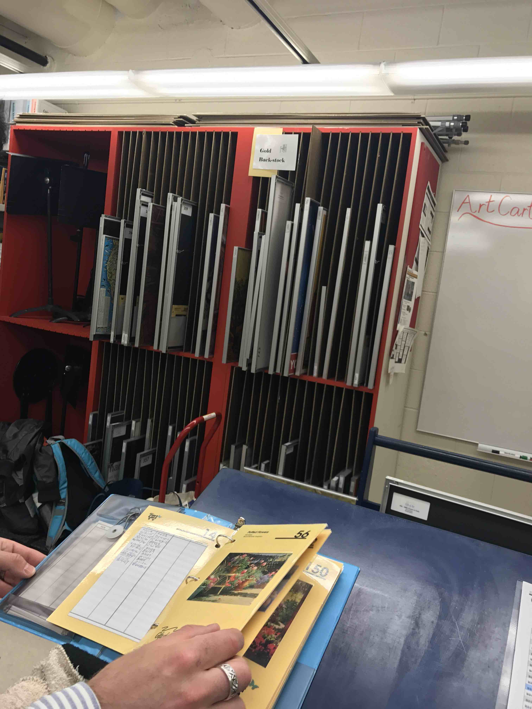

Scope
Get to know our client
We visited Michigan Medicine hospital to meet our client. When we walked around the hospital, we were amazed that the hall and lobby are all decorated with paintings or artifacts. We were told each patient has a painting in front of the bed.
Those are the work of our client - Gifts of Art (GoA).

In this course project, we were working on one program of GoA. It is called Art Cart - volunteers taking a cart full of arts, to visit patient’s room one by one, and ask patients whether they want to change the art in their rooms.

On one side of the cart, library cards were placed by room numbers, representing the paintings currently in patients' rooms

The cards representing the arts in the cart are stored in a binder for patients to read
We did background research for art in health care, to understand the organization’s goal, and talk with client to learn GoA worker’s workflow.